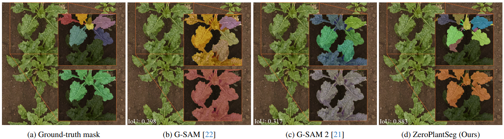

Zero-shot Hierarchical Plant Segmentation via Foundation Segmentation Models and Text-to-image Attention

Type: Conference Paper
Publication: The IEEE/CVF Winter Conference on Applications of Computer Vision (WACV), 2026
Abstract:
Foundation segmentation models achieve reasonable leaf instance extraction from top-view crop images without training (i.e., zero-shot). However, segmenting entire plant individuals with each consisting of multiple overlapping leaves remains challenging. This problem is referred to as a hierarchical segmentation task, typically requiring annotated training datasets that are often species-specific and require significant human labor. To address this, we introduce ZeroPlantSeg, a zero-shot segmentation for rosette-shaped plant individuals from top-view images. We integrate a foundation segmentation model, extracting leaf instances, and a vision-language model, reasoning about plants' structures to extract plant individuals without additional training. Evaluations on datasets with multiple plant species, growth stages, and shooting environments demonstrate that our method surpasses existing zero-shot methods and achieves better cross-domain performance than supervised methods. Implementations are available at https://github.com/JunhaoXing/ZeroPlantSeg.